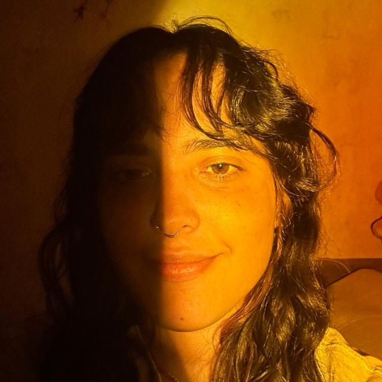
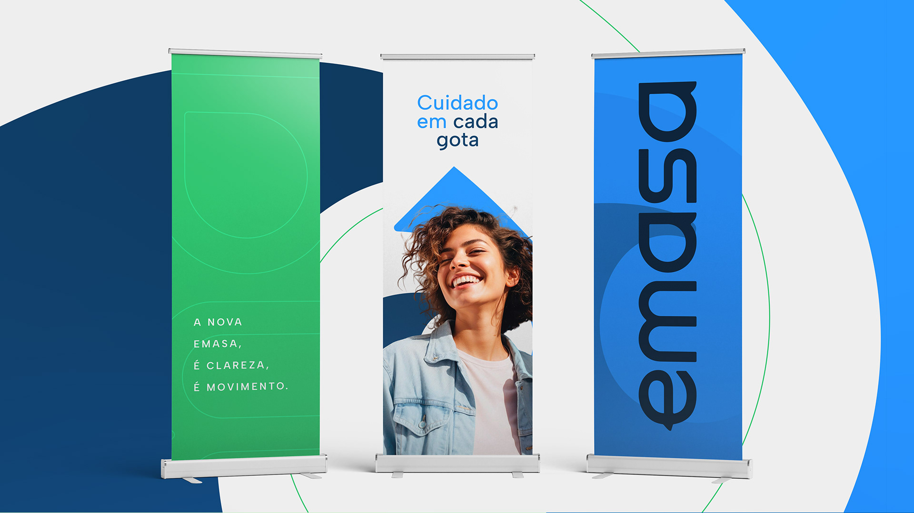
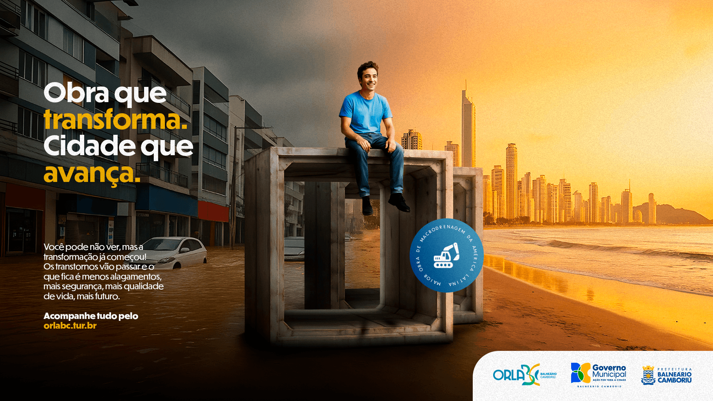
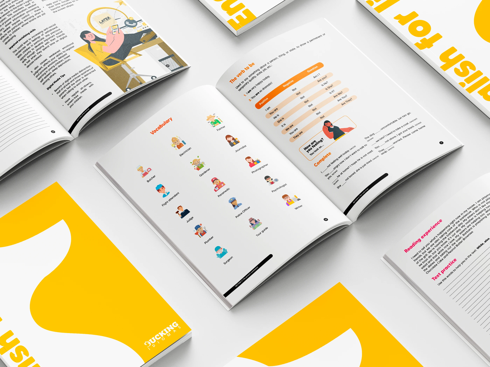
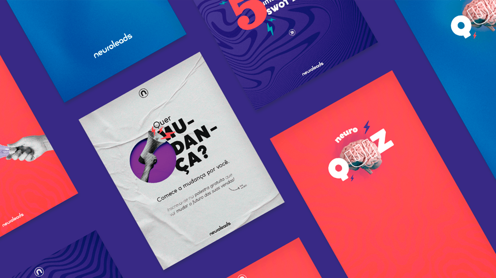
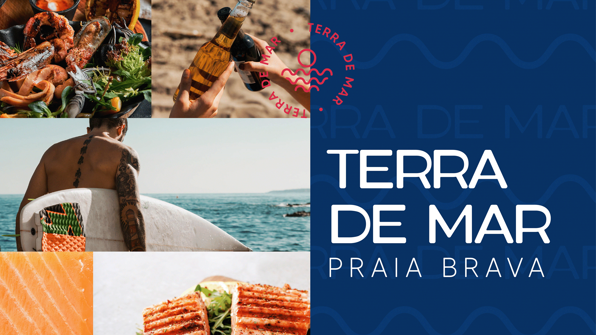

Brand Design & Visual Identity
Criação e aplicação de identidades visuais com estratégia, personalidade e consistência entre diferentes pontos de contato.
Brand Designer · Visual Identity · Design OpsBC · Brasil
Conecto pensamento de marca, design visual e fluxos criativos para construir experiências de marca consistentes, escaláveis e relevantes. Com mais de 6 anos em Brand Design, agora amplio minha atuação por meio de Design Operations.

Projetos selecionados · 2020—2026

Estratégia · Identidade visual · Posicionamento

Conceito · Key Visual · Desdobramentos

Sistemas · Hierarquia · Narrativa

Consistência · Conteúdo · Escala
Minha evolução profissional

Criatividade + estruturaMinha experiência em branding me ensinou que consistência não depende apenas de boas ideias — depende também de sistemas, documentação e colaboração.
Depois de atuar com identidades visuais, campanhas, Key Visuals e diferentes pontos de contato de marca, comecei a olhar com mais atenção para os fluxos por trás das entregas. Hoje, aprofundo meus conhecimentos em Design Operations, Creative Operations e Design Systems para compreender como equipes criativas podem trabalhar com mais clareza, eficiência e qualidade. Essa é uma direção em desenvolvimento, construída sobre minha experiência real em Brand Design.
Experiência & direção
Criação e aplicação de identidades visuais com estratégia, personalidade e consistência entre diferentes pontos de contato.
Conceitos criativos, Key Visuals e campanhas on e offline com unidade visual e desdobramentos coerentes.
Sistemas visuais, regras de aplicação e documentação que ajudam marcas e equipes a manter clareza e consistência.
Uma área em desenvolvimento: estudo workflows, documentação, governança e formas de reduzir ruído e retrabalho sem comprometer a qualidade criativa.
Como penso o trabalho
Meu processo conecta pensamento de marca, execução visual e organização para tornar decisões mais claras e entregas mais consistentes.
Contexto, pessoas e objetivos.
Prioridades, critérios e direção.
Conceito, sistema e expressão visual.
Aplicações, documentação e consistência.
Aprendizado, colaboração e melhoria contínua.
Trajetória
Conceitos visuais, branding, campanhas institucionais e conteúdo para redes sociais.
Conceitos e campanhas integradas, peças para social e mídia, ações on e offline.
Identidades visuais e materiais gráficos do briefing à entrega, com direção autoral e relacionamento com clientes.
Identidades, campanhas digitais e impressas e colaboração com as demandas de marketing.
Conteúdo, eventos, endomarketing, materiais para franquias e campanhas institucionais.
Aberta a conexões internacionais
Tenho interesse em oportunidades remotas, colaborações e projetos em branding, identidade visual, direção de arte e operações criativas compatíveis com minha experiência.